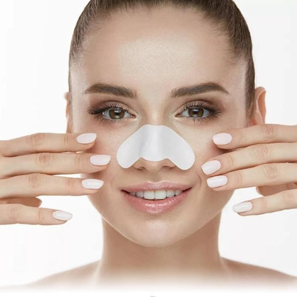

Cum funcționează produsul?
1. Curățarea tenului
Spală bine fața cu apă caldă pentru a deschide porii și a elimina impuritățile.

2. Aplicarea plasturelui
Așază plasturele pe zona dorită (nas, frunte, bărbie) și lasă-l să acționeze timp de 10–15 minute.
3. Îndepărtare delicată
Dezlipește cu grijă plasturele și observă impuritățile extrase din pori.
4. Rezultate vizibile
Bucură-te de o piele mai curată, mai fină și mai luminoasă încă de la prima aplicare!